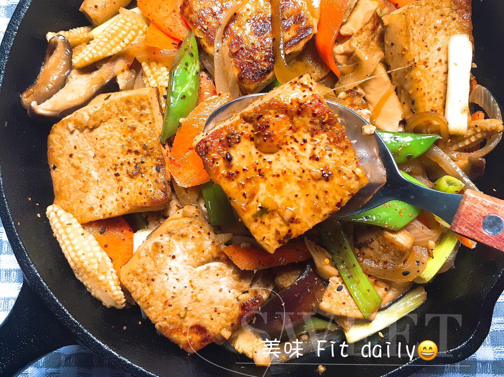
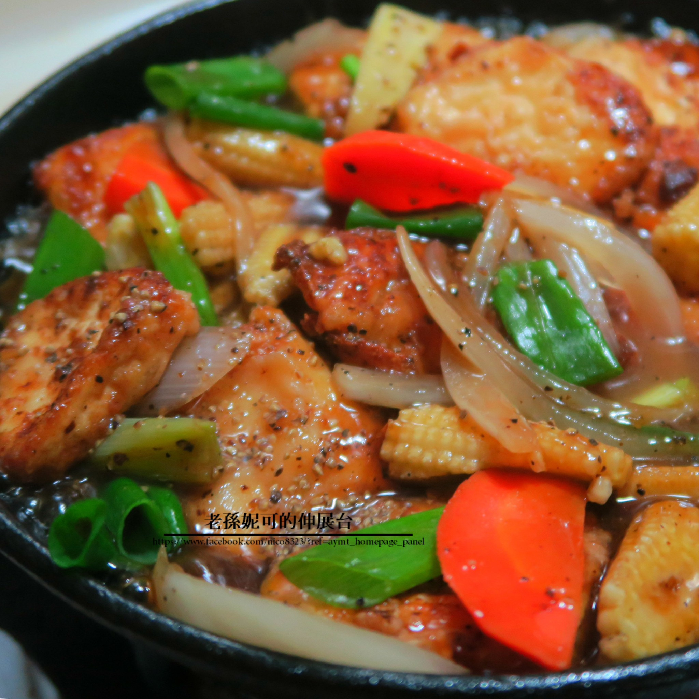
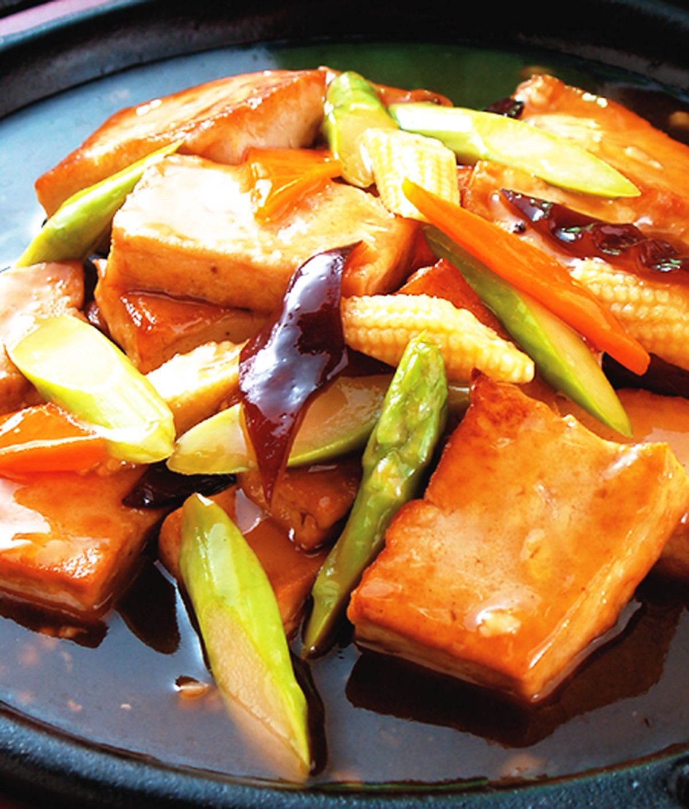

等鍋子溫度到達，豆腐下鍋煎炸約煎2-3分鐘左右後取出備用。 冷鍋加入20-30克奶油將蒜頭、辣椒爆香。
放入洋蔥及青椒、彩椒再倒入調製的醬汁熬煮再加入煎好的豆腐煮約5-10分鐘到入味。
放入另個鐵板燒熱2分鐘，倒入太白粉水勾芡。 攪拌一下後關火淋上2大匙純米醋或烏醋再加入川燙好的豆莢或時蔬。
在燒熱的鐵板上加入一小塊奶油後放入一點點洋蔥。
將整鍋剛燉煮好的蔬菜倒入鐵板中，關火後放上一把九層塔鋪上即可完成。
  
鳳梨蝦球介紹 蔥爆鮮蚵介紹 塔香蛤蜊介紹 心得
練習 影片 音樂
Your browser does not support the audio element. Your browser does not support the video tag.